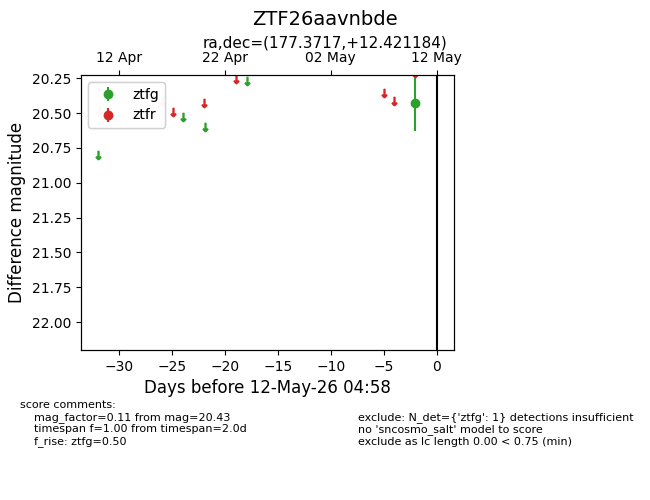
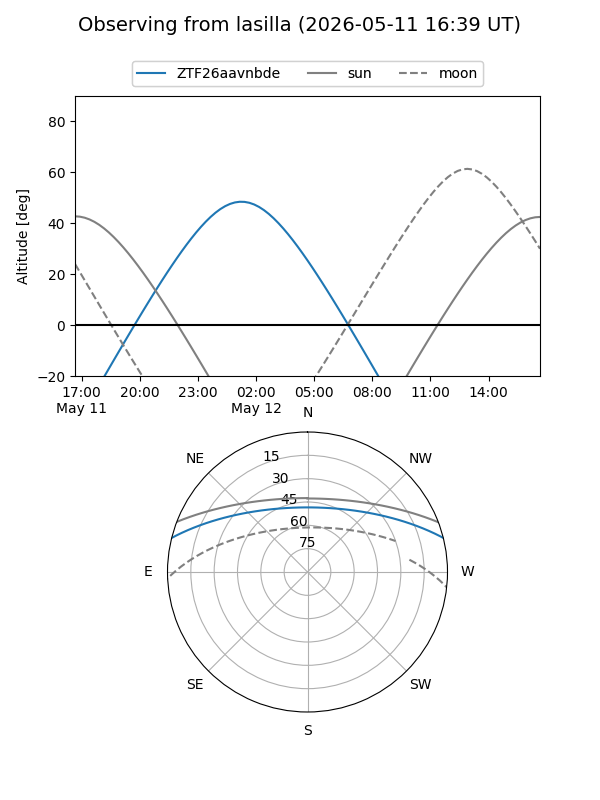
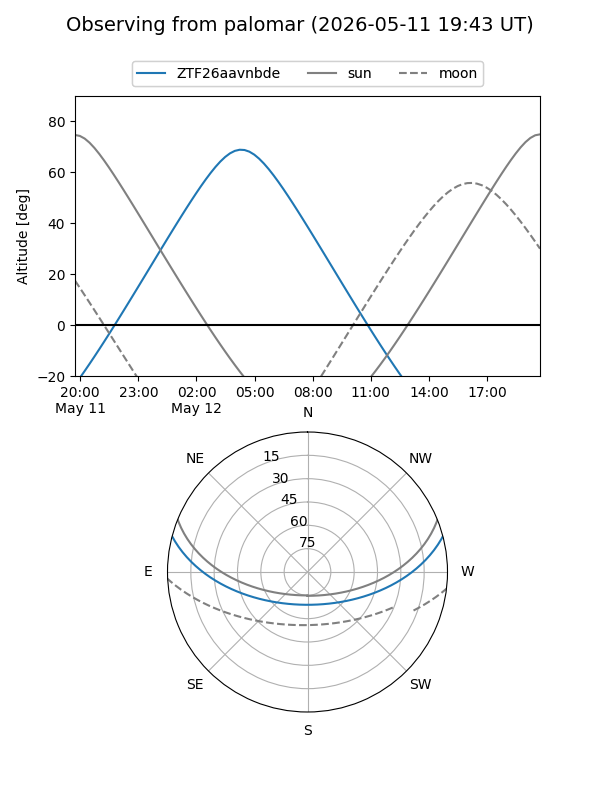

ZTF26aavnbde
Target ZTF26aavnbde at 2026-05-12 05:00
Aliases and brokers:
FINK: link
Lasair: link
ALeRCE: link
alt names
ZTF26aavnbde (ztf,fink_ztf)
Coordinates:
equatorial (ra, dec) = 177.3717,+12.42118
equatorial (HMS+DMS) = 11:49:29.21,+12:25:16.26
galactic (l, b) = (255.2816,+69.33751)
Flags:
Photometry:
last ztfg=20.43
1 ztfg detections
Lightcurve

Visibility


Additional plots